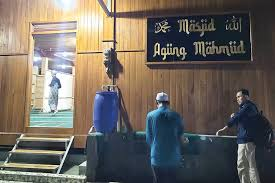

Sejarah Singkat Kampung Adat
Numutkeun masarakatna, ieu kampung téh diwangun ku Sembah Éyang Abdul Manaf,nu mangrupa turunan ti wali Cirebon, Syarif Hidayatullah. Ieu kampung diwangun abad ka 15 Maséhi.
Dimimitian ku Éyang Abdul Manaf nu indit ka Mekah ninggalkeun lemburna tur dumuk di Mekah dina waktu nu kaitung lilana.[1] Hiji mangsa Éyang Abdul Manaf ngarasa hayang balik deui ka lemburna, saméméh indit ninggalkeun Mekah, anjeunna ngadu’a di hiji tempat nu dingaranan Gubah Mahmud. deuket Masjidil Haram
Dina du’ana anjeunna meredih sangkan bisa balik deui ka lembur nu teu kacicingan ku penjajah.[1] Sanggeus nepi di lemburna, anjeunna néangan tempat luyu jeung pituduh nu aya di Gubah Mahmud tug nepi ka manggih hiji tempat nyaéta di daérah walungan Citarum.

Sanggeus manggih éta tempat, anjeunna ngawangun hiji kampung tina sakeupeul taneuh nu dibawa ti Gubah Mahmud sarta dibéré ngaran kampung Mahmud luyu jeung asal taneuh nu dipaké ngawangunna.[1] Salian ti éta, harti Mahmud di dinya dipercaya miboga harti kampung nu dipuji tur loba hal nu dipantrangna.[2] Sangkan ieu kampung teu kapanggih ku penjajah, anjeunna nempatkeun 40 jin pikeun ngajaga ieu kampung.[2] Tempat munggaran nu dipaké neundeun éta taneuh dingaranan Masjid Paimbaran.
Baca Selengkapnya →Lokasi Kampung Adat
Kampung Mahmud terletak di Kabupaten Bandung, tepatnya di RW 4 Desa Mekar Rahayu, Kecamatan Margaasih, Kabupaten Bandung Selatan.
Kampung ini berbatasan dengan:
- Sebelah utara: Desa Rahayu dan Desa Cigondéwa
- Sebelah selatan: Desa Pameuntasan dan Desa Daraulin
- Sebelah barat: Desa Nanjung
- Sebelah timur: Desa Margahayu
Struktur Organisasi Kampung Adat
Pemimpin tradisional di Kampung Mahmud disebut "Pupuhu" atau "Kuncen". Pupuhu adalah ketua adat, sedangkan Kuncen bertugas menjaga situs dan tradisi leluhur.
Ngaran Imah
.jpeg)
sakabéh imah anu aya di lingkungan masarakat kampung Mahmud mangrupa imah panggung
Upacara Adat
Beberapa upacara adat yang dilakukan di Kampung Mahmud antara lain:
- Ngalamar : Upacara lamaran.
- Seuseurahan : Upacara pernikahan.
- Ngeuyeuk seureuh : Upacara pra-pernikahan.
- Nincak endog : Upacara menginjak telur.
- Sawer : Upacara saweran.
Agama atawa Kapercayaan anu di anut
Ngeunaan tatacara dina kahirupan masarakat Kampung Mahmud, boh anu aya patalina jeung adat istiadat atawa jeung kayakinan kana agama, teu loba nu kapanggih dina hal anu béda jeung masarakat séjén.baheulana aya tokoh agama anu kakoncara.
Malah nepi ayeuna makamna loba kadatangan jalma anu baris ziarah, boh masarakat sabudeur atawa masarakat luar. Sistem anu hirup di masarakat sabudeur nyaéta ajaran agama Islam. Norma-norma kaislaman anu diangkat sarta dijadikeun tetekon ku masarakat Kampung Mahmud, katitén tina kahirupan sapopoéna.
Fakta Unik Kampung Adat
>Salah satu fakta unik dari Kampung Mahmud adalah ketika sungai Citarum banjir besar, kampung ini tidak terkena banjir meskipun posisinya seharusnya rawan banjir.
Baca Selengkapnya →